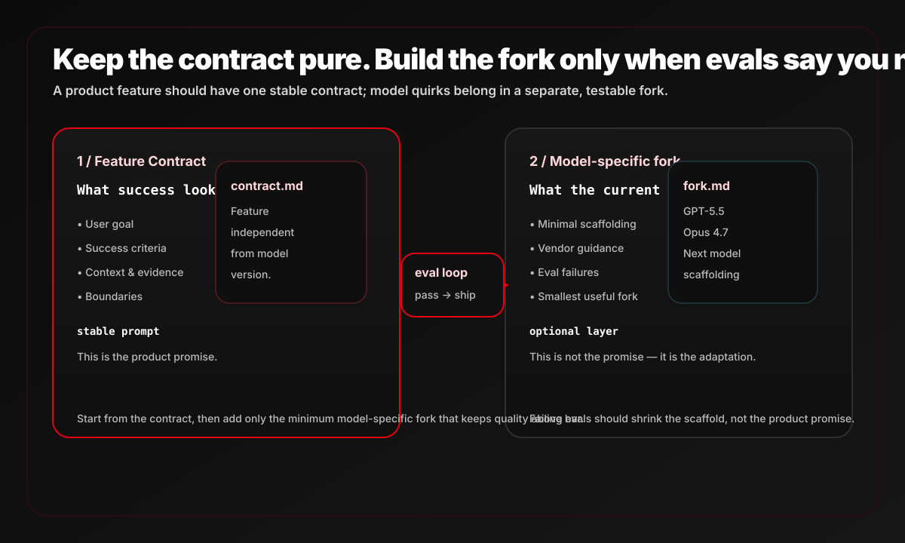

Agent Debt：把特性契约和模型补丁分开，别用今天的 prompt 绑死明天的模型
这篇文章把一个常见痛点说得很准：个人工作流可以跟着模型变化随时改，但面向用户的 AI 功能不能靠临场补丁过日子。要把 feature contract 和 model-specific fork 分开，评测通过才发布。
01 / 文章在反对什么
作者反对把长 prompt 当成万能答案。很多团队为了适配旧模型，堆出一堆绕路、限制、例外和补丁；这些 scaffolding 今天能提分，明天却会变成技术债。
三层痛点
- 模型每 6-8 周就会变：边界、可靠性和擅长任务会重新洗牌。
- 长 prompt 会锁死今天的 workaround：为了旧模型写的补丁，可能阻碍新模型发挥。
- 产品功能不能靠临场适配：用户侧功能需要 eval、测试和更高置信度。
一句原文核心判断
“prompts are technical debt too.”
这不是在说 prompt 没用，而是在说：如果你把模型补丁写进产品承诺里，你就把未来的升级成本提前锁死了。
大体能随模型更新快速调整。
必须评测、测试、守住回归边界。
补丁越多，升级越难，债务越重。
02 / 正确拆法：contract + fork
feature contract
- 写的是产品承诺：用户要完成什么。
- 描述成功标准、边界、证据和目标。
- 必须尽量保持模型无关，长期稳定。
model-specific fork
- 只在当前模型需要时加入最小脚手架。
- 内容来自：当前 prompt、eval failures、production issues、vendor guide。
- 原则是“最小必要改动”，不是继续堆补丁。

03 / 工作流闭环
1. 先测新模型
直接拿 feature contract 跑新模型，不要默认带上旧补丁。
2. 通过就直接 ship
如果它已经达到质量门槛，说明 contract 足够好，不需要 fork。
3. 不过就做最小 fork
把旧 prompt 里有帮助的部分保留，删掉过时 scaffolding，只补新模型真的需要的东西。
4. 再跑 evals
把失败样例和 vendor guide 作为输入，验证 fork 是否真的提质。
为什么这比“继续写长 prompt”更稳
- 把产品承诺和模型适配拆开，能避免“一个 prompt 绑死两件事”。
- 评测成为唯一发布门槛，减少拍脑袋升级。
- 模型升级时先回到 contract，而不是在旧 fork 上打补丁。
04 / 原文 4 图


05 / 一句话判断
这篇文章最值钱的地方，是把 prompt 从“个人技巧”升级成了“可维护工程资产”的组织方式。 先写 feature contract，再在需要时加 model-specific fork；用 eval 决定发布，而不是靠感觉决定要不要继续堆 prompt。
AI 产品经理、Agent / Prompt 工程、频繁跟模型升级的团队。
不是完全消灭 scaffolding，而是不把 scaffolding 写进产品契约。
Keep the contract pure. Build the fork only when evals say you need it.